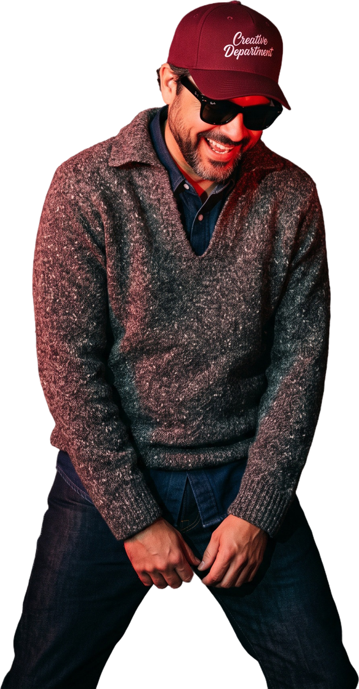

AI film and commercials
Spots, reels and short films from script to final grade, with characters, products and locations that stay consistent in every shot.

Art direction, AI film, motion and 3D for brands that want to be watched twice. Made in Puerto Rico.
Scroll, the show starts belowWritten, directed and produced by one department.
Two spec spots, made to show what a brand gets when the idea, the direction and the production sit at the same desk.
Spec work. Not commissioned by or affiliated with the brands shown.
Witches, wolves, pigeons and one island. Keep scrolling, it moves sideways.
Fan films and brand pieces, made for the love of the craft. Every character and trademark belongs to its owner.
This one runs the other way. Keep scrolling.
Spots, reels and short films from script to final grade, with characters, products and locations that stay consistent in every shot.
Sets, products and camera moves built to true scale, so every shot is planned in 3D before a single frame is produced.
Logo animation, kinetic type, social pieces and broadcast graphics, finished in After Effects.
The concept, the key visual and the look of the whole campaign, carried across TV, digital, outdoor and print.
Logos, packaging, menus and billboards. Files that reach the printer ready to run.
WireframeFinal render
One line that makes people stop. Then the script and the references.
Characters, wardrobe, products and locations get locked on reference sheets.
The scene is blocked in 3D: lenses, camera moves and timing.
Every shot is generated, directed and redone until it matches the board.
Edit, color, sound design, voice and music.
Every format the media plan needs, from a vertical reel to a billboard.
Creative Department is Luis E. Ortiz, an art director and AI creative with nearly two decades in advertising, working from Puerto Rico for anywhere.
@elcreativedepartment